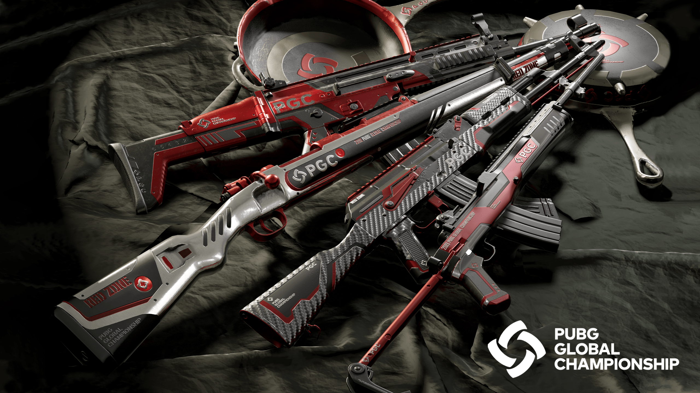

Les gilets pare-balles jouent un rôle crucial dans la survie lors des affrontements. Chaque niveau de gilet réduit davantage les dégâts subis : le niveau 1 diminue les dommages de 30 %, le niveau 2 de 40 %, et le niveau 3 de 55 %. Bien que les gilets de niveau supérieur soient plus résistants, ils sont aussi plus rares. Choisir le bon gilet selon la situation peut faire toute la différence entre la vie et la mort sur le champ de bataille.
Équipement
Dans PUBG, chaque partie est une aventure où la survie dépend de votre capacité à vous équiper judicieusement. Au fil de votre exploration, vous découvrirez une variété d'objets essentiels, dispersés à travers le terrain ou laissés par des adversaires éliminés. Ces équipements, allant des gilets pare-balles aux casques, en passant par les sacs à dos, les armes et les kits de soins, sont cruciaux pour renforcer votre défense, optimiser votre attaque et assurer votre durabilité sur le champ de bataille.
Gilets pare-balles
Casques
Dans PUBG, le casque n'est pas seulement un accessoire, c'est un élément vital. Il protège la tête des tirs critiques, particulièrement les tirs à la tête qui peuvent être fatals. Le casque de niveau 1 offre une protection de base, tandis que le niveau 2 apporte un meilleur équilibre entre défense et rareté. Le casque de niveau 3, très recherché, peut encaisser un tir direct de fusil de précision, faisant de lui un atout décisif dans les combats à haute intensité.
Sacs à dos
Le sac à dos permet d'augmenter considérablement la capacité de transport de votre personnage. Il existe en trois niveaux, chacun offrant plus d'espace pour emporter armes, munitions, soins et accessoires. Un bon choix de sac à dos vous assure une meilleure gestion de l'inventaire et une flexibilité stratégique. Mais attention : un sac plus gros peut aussi rendre votre silhouette plus visible aux ennemis.
Armes

PUBG propose une vaste gamme d'armes, allant des fusils d'assaut aux snipers, en passant par les mitraillettes et les pistolets. Chaque arme possède ses propres caractéristiques en termes de portée, puissance et cadence de tir. Trouver l'arme adaptée à votre style de jeu et savoir l'utiliser efficacement est essentiel pour dominer vos adversaires. Les accessoires comme les viseurs, les silencieux ou les poignées améliorent grandement vos performances.
Soins

Les objets de soin sont indispensables pour rester en vie après un échange de tirs. Entre les bandages, les trousses de soin, les boissons énergétiques et les antidouleurs, chaque objet a un rôle spécifique. Bien gérer son stock de soins et savoir quand les utiliser peut inverser le cours d’un combat. Gardez toujours de quoi vous soigner avant d’engager un affrontement prolongé.
Grenades et équipement tactique
Les grenades sont des outils puissants pour le combat tactique. Qu'il s'agisse de grenades explosives, fumigènes ou aveuglantes, elles permettent de désorienter, de repousser ou d'éliminer les ennemis efficacement. En complément, les équipements comme les leurres et les pièges ajoutent une dimension stratégique au gameplay. Bien utilisés, ces outils peuvent transformer une situation désavantageuse en victoire éclatante.